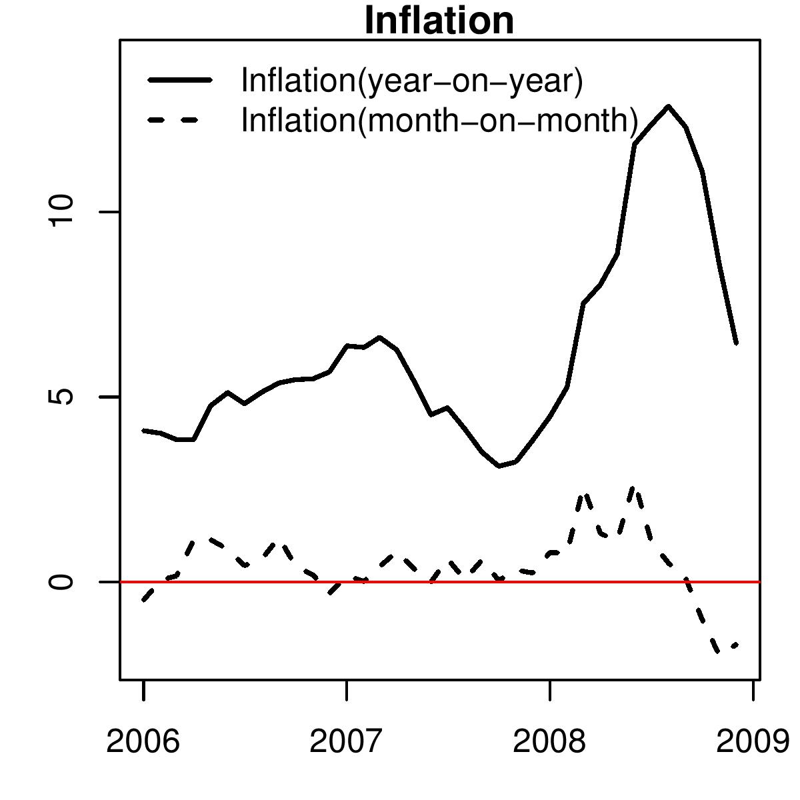
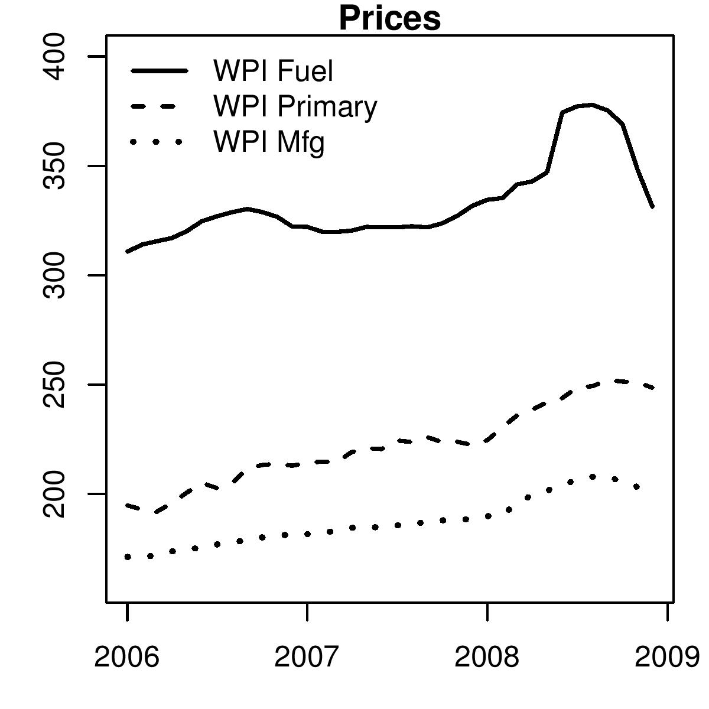
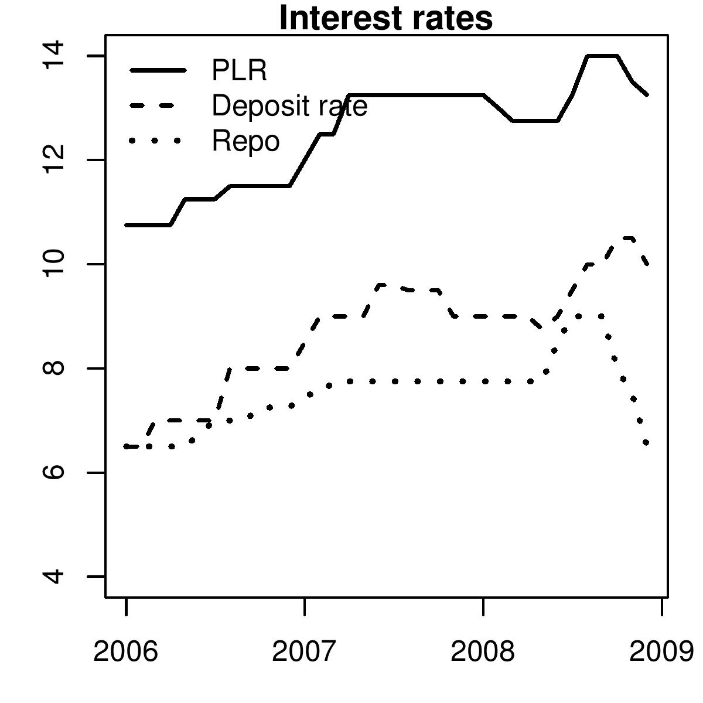

When up is down
Financial Express, 9 February 2008
 The latest data on inflation says that prices rose by more than 5 percent. In fact, data released last week showed an inflation number higher than the previous week. Inflation had gone up and this suggested that prices are on a rising trend. However, this analysis is incorrect. What is wrong with this analysis?
Figure 1 shows us primary, fuel and manufacturing price indices of the wholesale price index. The graph, as well as more sophisticated statistical analysis, suggests that while there is some seasonality in primary products, there is none in fuel and manufacturing prices. As a consequence, we should begin by first simply looking at the line graphs and the index numbers to understand whether prices are rising or falling. What do the numbers tell us?
Both fuel and manufacturing prices have been declining in recent months. Thus, instead of inflation, a price rise, as we would imagine when we discuss a rise in the inflation rate, prices actually fell.
So why does the data released by the government suggest price rise? The basic problem is that the government is looking at price increase over last year. What does the year-on-year rate measure? Standing in January 2009, an increase of 5 percent year-on-year in the price of cement, for example, means that if in January 2008, the price of cement was Rs 100 per kg, then today the price of cement is Rs 105 per bag. This could have been because the price rose from Rs 100 to Rs 150 in March 2008, and since then has been declining and is today at Rs 105. This is a scenario of falling prices. If measured on a month by month basis we would see deflation. We see this in oil prices and in WPI Fuel.
Alternatively, it could be that the price of cement fell to Rs 80 per kg by June 2008 and has since been steadily rising, and is now up to Rs 105. Here a month on month inflation rate will be positive in recent months. This is a scenario of rising prices. Both show a year on year inflation rate of 5 percent. When we focus on inflation on a year-on-year basis, as we tend to do in India, we miss out on the inflationary process described above.
Developed countries normally focus on month-on-month changes. There is, however, one problem with monthly changes. If there is seasonality in the data, it might suggest there is a rise in prices and we might start taking policy action, but that would be a mistake. For this reason the data is adjusted for seasonality.
There is a risk of missing the good news with year-on-year data. This is what is happening today. It has happened earlier too. In the mid 1990s when seasonally adjusted monthly inflation was already showing signs of prices having being brought under control, year-on-year inflation continued to be high. The RBI, unaware of this good news, kept on tightening monetary policy. This appears to have kept monetary policy tight for too long. We, however, did not draw lessons from that experience. The work required for making these calculations including the seasonal adjustment is fairly straight forward. The techniques and software are easily accessible. However, it is not the job of the public to do this. It has to be the government statistical system that makes these series and release them along with the unadjusted data.
Figure 2 shows the how different the trend in recent inflation rates appear to be when measured on month-on-month and on year-on-year basis. The seasonally adjusted month on month WPI inflation rate is below zero. It shows that month after month prices have been falling. Yet the year-on-year rate continues to show inflation suggesting that prices are rising.
This measurement mistake could perhaps have contributed to RBI putting the process of monetary easing on hold in the January credit policy.
Under normal conditions, with some nudging and pushing banks change their lending and deposit rates with the policy rate. Figure 3 shows the average prime lending rates of commercial banks (PLR), their deposit rates and the repo rate that the RBI sets. While some leads and lags are seen, it appears that when the RBI has raised or cut the repo rate, banks have broadly followed. However, as seen in the Figure, this time things are quite different. There have been a sharp cuts in the RBI repo rate but banks have not cut their deposit and lending rates in sync. Considering that prices are falling this makes real interest rates too high. Any postponement of further easing interest rates is going to put the already slow economy at further risk.
In conclusion, I would like to emphasise that in recent months prices have been falling. Year on year inflation numbers present a false picture. Broadcasting inflation numbers that show year on year inflation is hurting the economy not only because it influences public perception of the problems the economy faces today but also because it has become the basis on which monetary policy is made. If monetary policy claims to be focused on inflation the first thing to be done is to produced seaonally adjusted data and produce and release point on point growth rates.
Back up to Ila Patnaik's media page
Back up to Ila Patnaik's home page